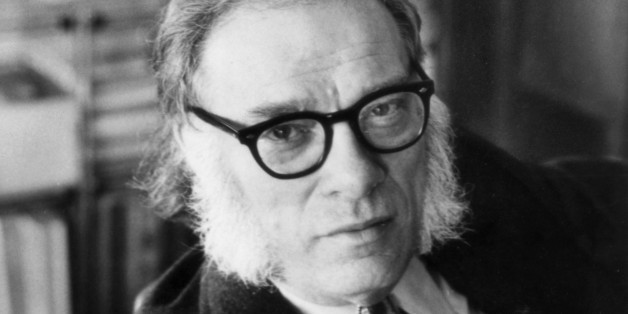

Isaac Asimov
The father of the Three Laws of Robotics

The famous writer Isaac Asimov
Interesting facts about Isaac Asimov
- He was an American writer and a professor of biochemistry.
- He wrote the successful science-fiction series Foundation and Robots.
- In his Foundation series, he coined the term psychohistory, which is the science that predicts the future course of large populations.
- The Robot series contained a set of ethical rules for robots and intelligent machines, called the Three Laws of Robotics.
- A robot may not injure a human being or, through inaction, allow a human being to come to harm.
- A robot must obey the orders given it by human beings except where such orders would conflict with the First Law.
- A robot must protect its own existence as long as such protection does not conflict with the First or Second Laws.
- Asimov coined the term robotics in his 1941 story Liar.
- He won more than a dozen annual awards for particular works of science fiction and a half dozen lifetime awards. He also received 14 honorary doctorate degrees from universities.
I do not fear computers. I fear the lack of them.
Do you want to learn more about Isaac Asimov? Visit his page on Wikipedia.
Background photo designed by Kostolom3000 / Freepik